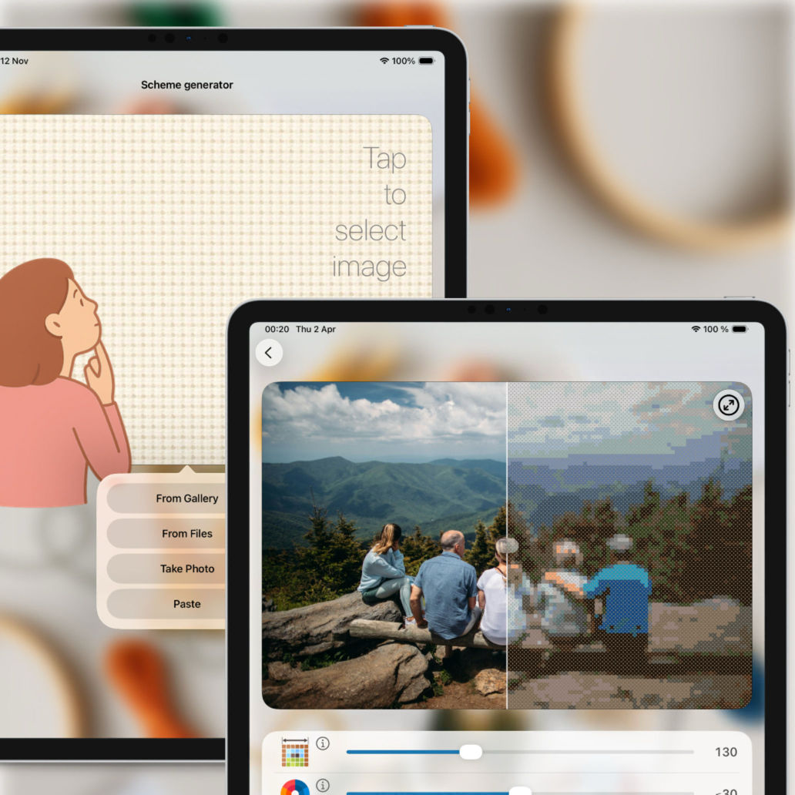
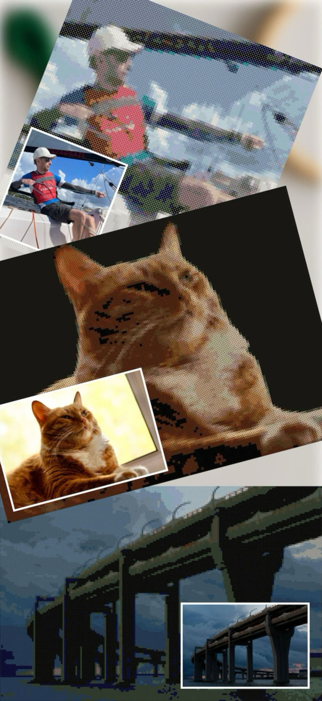
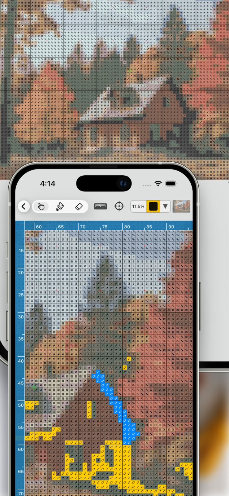
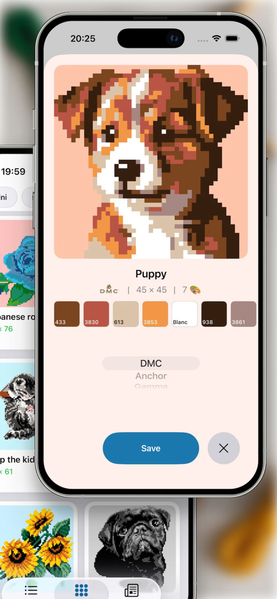
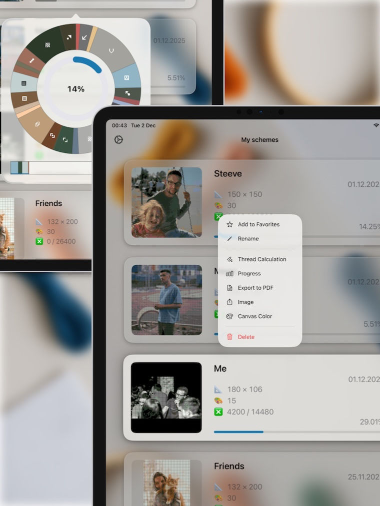
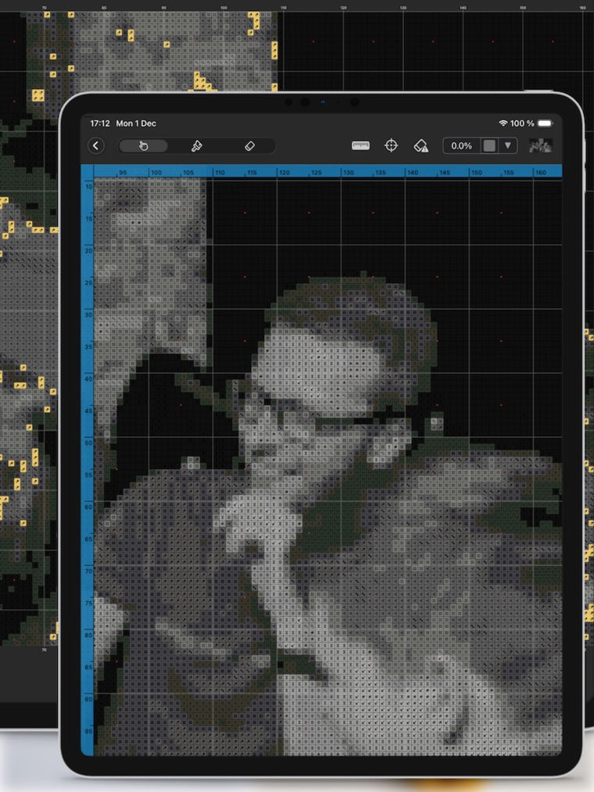

Powerful & Accurate Converter
Upload photos from your gallery, camera, or
clipboard.
The app's algorithm accurately converts images into pixel patterns using official thread
palettes from DMC, Anchor, Gamma, PNK Kirov, Madeira, Dimensions, Olympus, or Perler
beads.
Several conversion modes are available depending on your image type (pixel
art,
logo, photograph).

Full Control Over Your Pattern
- Adjust complexity and detail — choose pattern size from 25 to 320 elements in length.
- Control your palette — limit the number of colors for simplicity.
- Select thread/bead manufacturer or use only the colors you have in stock by creating your own material list.
- Transparency support — upload PNG images with transparent background if you don't want full coverage and plan to use your fabric's color.

Smart Editor & Progress Tracking
Mark stitched crosses or placed beads right on the
pattern.
Track overall progress and advancement per color. Highlight a specific color from the
palette across the entire pattern to focus on working with a particular
material.
Nothing
gets lost — the app automatically saves your progress as you work.

Ready-Made Pattern Library
Find your mood and inspiration — choose from a wide
variety
of ready-made patterns. Pick your style, size, select a palette, and start
creating.
The
catalog is constantly updated.
Your pattern with your author signature can also
make
it into the shared library if you submit it for review.

Essential Tools
🪡 Calculate exact floss length or bead count for each
color
to purchase the right amount with the material calculator.
📄 Export your pattern
as
ready-to-print PDF files, split into convenient pages.
📏 Set your desired fabric
count to see the finished size not only in stitches but also in physical
measurements.
🌗 The editor supports dark mode to reduce eye strain while you
work.
Multiple color combinations are also available for highlighting specific materials or
marking completed sections.

Privacy & iCloud Sync
Patterns are generated and stored locally on your
device
and are never shared with third parties. Your personal library is completely
private. No sign-in is required.
Sync your patterns between iPhone and iPad via
iCloud — start on one
device,
continue on another.
Complete Freedom — No Subscriptions
No subscriptions, no in-app purchases. The only limit is your imagination. We believe creativity should be accessible to everyone. Start bringing your memories to life today!